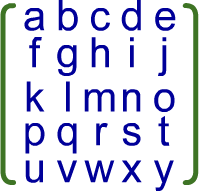

Constructor
Variables
Methods
inlineiterator():Iterator<Float>
>>> ({
... var m = Matrix5x5.counting;
... var arr = new Array();
... for( i in m ){
... arr.push(i);
... }
... [1.,2.,3.,4.,5.,6.,7.,8.,9.,10.,11.,12.,13.,14.,15.,16.,17.,18.,19.,20.,21.,22.,23.,24.,25.].toString() == arr.toString(); }) == true
Static variables
staticread onlycounting:Matrix5x5
>>> ({
... Matrix5x5.counting == new Matrix5x5({ a: 1., b: 2., c: 3., d: 4., e: 5.
... , f: 6., g: 7., h: 8., i: 9., j: 10.
... , k: 11., l: 12., m: 13., n: 14., o: 15.
... , p: 16., q: 17., r: 18., s: 19., t: 20.
... , u: 21., v: 22., w: 23., x: 24., y: 25. } );
... }) == true
staticread onlyminus1:Matrix5x5
>>> ({
... Matrix5x5.minus1 == new Matrix5x5({ a: -1., b: 0., c: 0., d: 0., e: 0.
... , f: 0., g: -1., h: 0., i: 0., j: 0.
... , k: 0., l: 0., m: -1., n: 0., o: 0.
... , p: 0., q: 0., r: 0., s: -1., t: 0.
... , u: 0., v: 0., w: 0., x: 0., y: -1. } );
... }) == true
Static methods
staticinlineadd(m0:Matrix5x5, m1:Matrix5x5):Matrix5x5
>>> ({
... var a = Matrix5x5.unit;
... a + a == new Matrix5x5( { a: 2., b: 0., c: 0., d: 0., e: 0.
... , f: 0., g: 2., h: 0., i: 0., j: 0.
... , k: 0., l: 0., m: 2., n: 0., o: 0.
... , p: 0., q: 0., r: 0., s: 2., t: 0.
... , u: 0., v: 0., w: 0., x: 0., y: 2. } ); }) == true
staticinlineequal(a:Matrix5x5, b:Matrix5x5):Bool
>>> ({
... var a = Matrix5x5.counting;
... var b = Matrix5x5.counting;
... a == b; }) == true
staticinlinenegating(a:Matrix5x5):Matrix5x5
>>> ({
... var a = Matrix5x5.counting;
... var b = -a;
... b == new Matrix5x5({ a: -1., b: -2., c: -3., d: -4., e: -5.
... , f: -6., g: -7., h: -8, i: -9., j: -10.
... , k: -11., l: -12., m: -13., n: -14., o:-15.
... , p: -16., q: -17., r: -18., s: -19., t: -20.
... , u: -21., v: -22., w: -23., x: -24., y: -25. } );
... }) == true